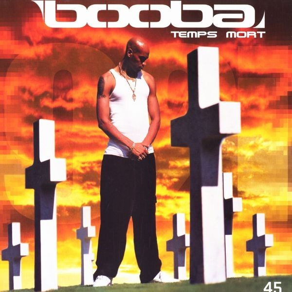
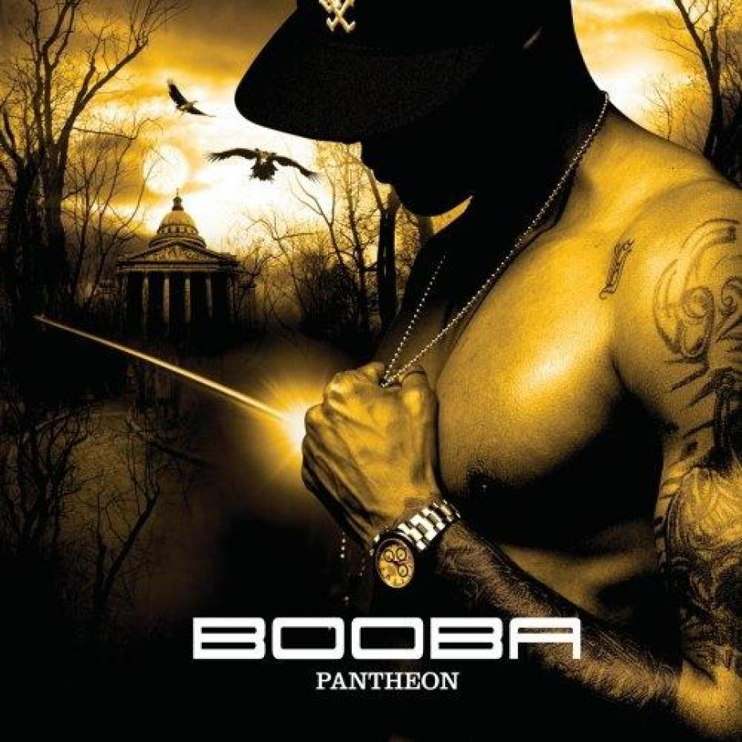
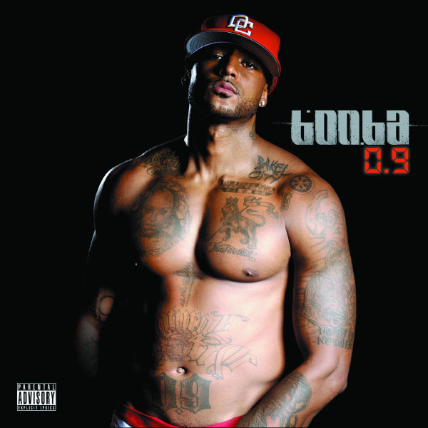
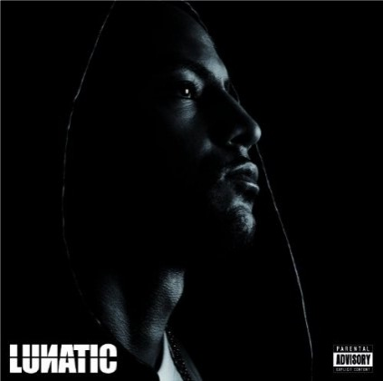
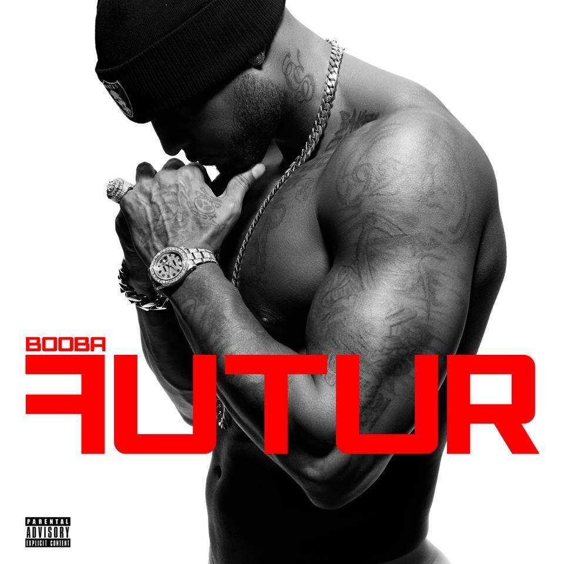
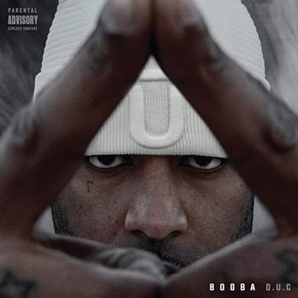
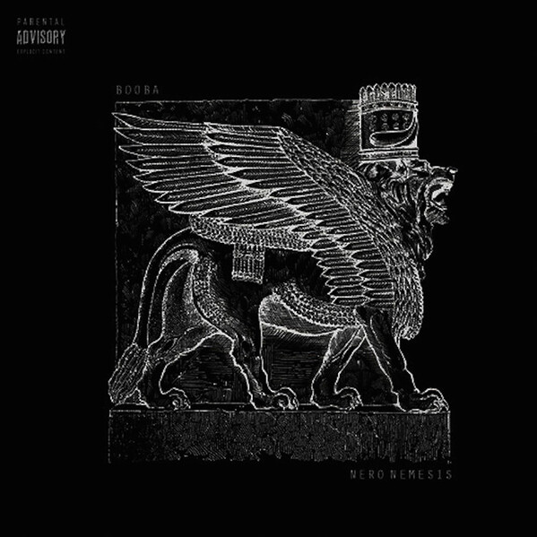
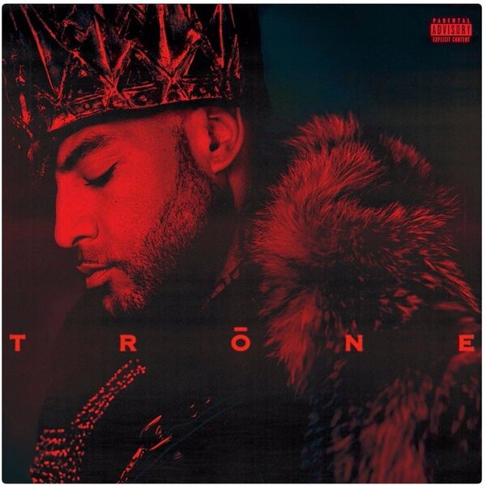
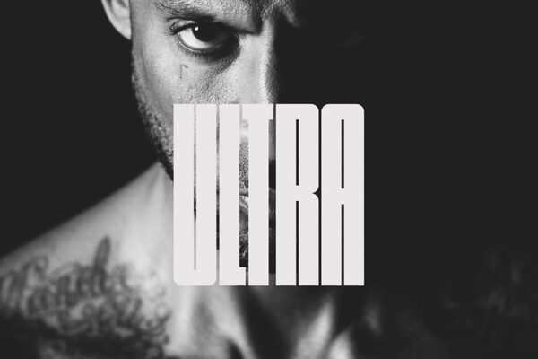
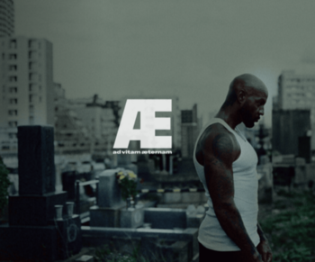

2002 : Temps Mort
Après la sortie de Mauvais oeil, l’annonce d’un album solo de Booba laissait perplexe, le duo Lunatic ayant toujours fonctionné sur la complémentarité. Au premier abord, la pochette du vinyl – silhouette de Booba au milieu d’un cimetière, un ciel rougeâtre en arrière plan – tranche avec le style sombre et figuratif des précédentes. Cette référence à 'Repose en paix', maxi annonciateur de l’album, laisse présager un opus incisif, dévastateur lyricalement.
2004 : Pantheon
Pas de changement radical pour cet album : Booba demeure l’auteur de textes peaufinés, grâce une inaltérable capacité à faire naître des images percutantes ( "Je pourrais […] t’ouvrir l’esprit à coup de battes" ). Toutefois, celle-ci est désormais entièrement au service d’un égotrip envahissant. Mais l’arrogance sans limite de Booba, épaulée par un humour acide peu présent jusqu’alors, compense la faible portée de certaines phases.
2006 : Ouest Side

Le premier, Booba entra en scène pour un acte II attendu « depuis le landau ». Ce furent les albums Temps mort (2002) et Panthéon (2004), dégoulinants de morgue, de déconcertances et de science infuse. Du côté d’Ali, il fallut attendre 2005 pour assister au retour de bâton du berger à la bergère. L’album s’intitulait Chaos et harmonie, et Ali y donnait enfin à entendre le fruit de cinq ans de matière et de réflexion.
2008 : 0.9
Quatrième solo de Booba, 0.9 est la suite des aventures pas si impudiques que cela d’un homme devenu joint-venture 367 jours par an. Comme lors des opus précédents, le son est calqué sur les tendances US du moment, avec recours répété à l’engin qui permet de chanter en mode R2D2. Comme lors des opus précédents, les invités viennent d’où nul ne les attendait et le flow redouble de nonchalance calculée. Comme lors des opus précédents, l’auteur se livre au compte-gouttes. Oui il y a une âme derrière ce déluge d’enjoliveurs en ivoire, de tartines de poudre et de barils de strings.
2010 : Lunatic
Au début, ce n’est qu’une impression diffuse ; une sensation qui revient piquer l’oreille de temps en temps mais est rapidement éclipsée par le son rutilant de Lunatic. Une écoute attentive des quatre précédents albums de Booba permet pourtant de la confirmer : oui, jamais l’écriture du MC n’a semblé aussi inégale que sur ce cinquième solo. Pauvreté de certaines rimes, pauvreté de certains enchaînements, pauvreté de certains refrains. Même style de punchlines egotrip depuis 0.9. Pire : à plusieurs reprises, le rappeur du Pont de Sèvres paraît être en panne d’inspiration et tirer désespérément sur la corde pour remplir ses mesures – la fin de « Comme une étoile », son deuxième couplet sur « 45 Scientific », les dernières rimes des couplets de « Fast Life »…
2012 : Futur
La concurrence toujours à la traîne, l’argent qui n’en finit plus de pleuvoir, le succès ininterrompu et une solitude encore plus renforcée par la disparition de Bram’s, voilà de quoi il est essentiellement question dans Futur, sixième album solo de Booba. Ces quatre thématiques sont abordées dès le morceau d’ouverture, sobrement intitulé « G5 (Intro) », qui résume fugacement le disque en l’espace de huit lignes (« Ils me donnent des coups que je ne sens pas, sur les champs de bataille dans mes veines coule du champagne, dans ma tête plein de billets font les cent pas, on ne fait que me prêter de l’amour que je ne rends pas » puis « Contre vents et marées, de quelques frères malheureusement je suis séparé, évitons les sujets qui fâchent, l’important c’est pas la chute mais l’atterrissage »). Les quinze autres morceaux composant le projet ne sont rien d’autre qu’une imposante variante autour de ces sujets. Cette propension à tourner en rond, qui flirte parfois dangereusement avec le remplissage, rend le disque étonnamment intrigant.
2015 : D.U.C
Cet album, dense, se révèle difficilement abordable en tant que tel, mais plus pertinent si on daigne le considérer comme un grand buffet où chaque auditeur vient se servir à sa guise. On retrouve sur ce disque-événement des morceaux qui font date dans la vaste discographie du duc de Boulogne, comme les exceptionnels “Tony Sosa” et “Bellucci” – avec un Future décidément au sommet en cette année 2015 – qui ouvrent l’album d’une trap sombre et incisive, mais aussi l’hymne mélodieux “OKLM” qui conclut parfaitement le projet. Entre ces tubes, on navigue comme un rapti sur des eaux déchaînées, quitte à s’égarer dans les méandres d’un disque sans réelle identité : un parti pris relativement assumé.
2015 : Nero Nemesis
Nero Nemesis est le huitième album studio du rappeur français Booba sorti le 4 décembre 2015 sur le label Tallac Records, et distribué par Universal. Cet album est sorti le même jour que plusieurs autres projets de rap français, dont celui de son rival de longue date, Rohff.
2017 : Trone
Trône, parfois orthographié Trōne, est le neuvième album studio du rappeur français Booba sorti le 1ᵉʳ décembre 2017 en format numérique et le 15 décembre 2017 en format physique, sur le label Tallac et distribué par 92i, Capitol, et Universal.
2021 : Ultra
ULTRA nous présente un Booba esseulé, accompagné des derniers sous-fifres encore incapables de voler de leurs propres ailes - à part Maes, car l’exception confirme la règle. Le couplet de Dala sur "Vue sur la mer" vous rappellera le mec dans votre classe de troisième au collège de Vélizy-Villacoublay lancé depuis 2014 dans une carrière de rappeur street – pas la meilleure idée qui lui soit venue -, Gato reste fidèle à lui-même, tandis que "Bonne journée" avec SDM vous fera regretter Siboy et (même) Benash sur "Zer".
2024 : Ad vitam æternam
Depuis Temps Mort, Booba a en fait subi une défaite, et pas des moindres, avec ULTRA, album tout à fait correct s'il avait été sorti par un énième quidam cagoulé des années 2020, mais inacceptable venant de lui. Accumulant fautes de goûts, rimes triviales et collaborations malheureuses, ce dixième disque, censé conclure sa carrière, sera finalement suivi de cet album surprise, AD VITAM ÆTERNAM, un peu comme lorsque D.U.C, avant-dernier album moyen de B2O, avait été suivi par un Nero Nemesis exceptionnel en 2015. L'orgueil est un bien beau moteur.